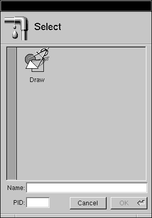
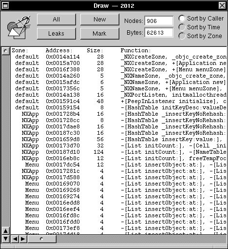
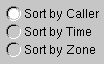

Copyright ©1995 by NeXT Computer, Inc. All Rights Reserved.
| 8 |
The MallocDebug Application
| The Malloc Debugger measures the dynamic memory usage of applications. You can use it to measure all allocated memory in an application, or to measure the memory allocated since a given point in time. The Malloc Debugger also provides a garbage detector that you can use to detect memory leaks.
The Malloc Debugger actually consists of two components: |
| A library containing a version of malloc that gathers statistics on memory use | ||
| The MallocDebug application, which you use to examine those statistics |
| Preparing Your Application |
| Before using the Malloc Debugger, you must first link your application with a library containing a special version of malloc that can communicate with the MallocDebug application. To do this, link with the library /usr/lib/libMallocDebug.a using the linker option -lMallocDebug. The -lMallocDebug option must be placed before the -lsys_s option to ensure that malloc is overridden properly. If your application is built with Interface Builder, you can simply add /usr/lib/libMallocDebug.a to the "Other libs" section of the Project Inspector. |
| Using MallocDebug |
|  |
| To use the Malloc Debugger, you must first select an application to monitor. Choose the Open command in the Application menu to bring up the Select panel. Only currently running applications that have been configured for use with MallocDebug appear in the panel. Once you select an application by double-clicking its icon, MallocDebug opens an application panel for the selected application. |
|  |
| The name of the application and the process number appear in the title bar of the application panel. Initially, the panel is empty. |
| Click the All button to display a list of all currently allocated nodes in your application. These nodes have been allocated by one of the standard C allocation functions (malloc, realloc, calloc, or valloc) or a NEXTSTEP zone allocation function (NXZoneMalloc, NXZoneRealloc, NXZoneCalloc). As shown in above, each row displays the zone in which the node was allocated, the address and the size of the node, and the function or method that allocated the node. |
|  |
| You can sort the nodes by caller, by time of allocation, or by zone. |
| Identifying Damaged Nodes |
| MallocDebug detects nodes that have been written to incorrectly. If your application has written past the end of a node, a right arrow (>) appears by the node. Similarly, if your application has written before the start of a node, a left arrow (<) appears by the node. Many of these errors are caused by giving malloc() the result of strlen(s) as the argument for a string instead of strlen(s) + 1.
Note: Damaged nodes are always listed first, regardless of the sorting mode. |
| Finding Memory Leaks |
| MallocDebug contains a conservative garbage detector, which is useful in finding memory leaks. |
| When you click the Leaks button, MallocDebug searches through your program's memory for pointers to each node. Any node that can't be referenced is displayed as a memory leak.
Since the garbage detector doesn't know which words in memory are pointers, it's possible that an integer has the same value as a pointer to a given node. In this case, the node doesn't show up as a leak even though it really is (this is why the garbage detector is called conservative). In practice, this problem is very rare. Note: The garbage detector only searches for references to the beginning of each node. If your program doesn't retain a pointer to the start of a node, but instead retains a pointer into the middle of it, that node will show up as a leak even though it really isn't one. |
| Measuring Memory Usage |
| You can use MallocDebug to determine the memory usage of a given portion of your program. |
| To begin measuring, click the Mark button. |
| After exercising a portion of your program, click the New button to see the nodes allocated since the mark. MallocDebug always shows you the nodes that are still currently allocated, so you will see only those nodes allocated since the mark that haven't been freed. |
| MallocDebug Command Reference |
| This section describes the application-specific menus and commands available in MallocDebug. For descriptions of standard menus and commands, see the User's Guide.
Commands in the Main Menu MallocDebug's main menu contains the standard Info, Edit, Windows, Services, Hide, and Quit commands. The Application command displays the Application menu described in the following section.
Commands in the Application Menu The Application menu contains the following commands for opening and closing applications: |
| Command | Effect | |
| Open | Displays the Select panel, from which you select and open a running application. See "Using MallocDebug" for a description of this panel. | |
| Close | Closes the Application panel for the selected application. The debugged application remains running. |